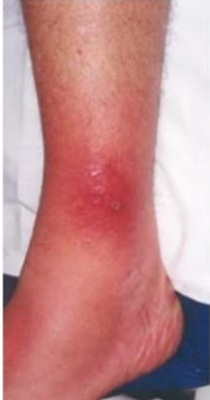
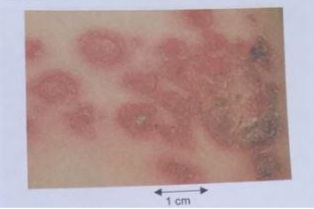
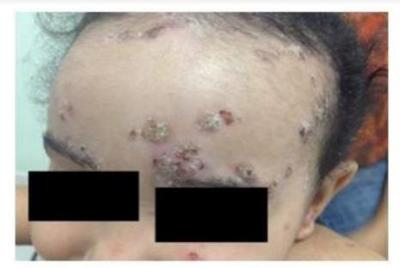
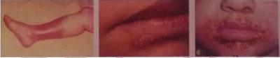
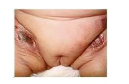

Questão 1 · Impetigo bolhoso · Dermatologia · 4000181780Há duas formas de impetigo, o bolhoso e o não bolhoso. A forma bolhosa
A representa cerca de 70% dos casos de impetigo.
B é causado pelo Staphylococcus aureus.
C necessita de solução de continuidade cutânea para o aparecimento das lesões.
D é considerada uma infecção cutânea profunda.
Questão 2 · Impetigo bolhoso · Dermatologia · 4000169076Menino de 4 anos apresenta há uma semana, em perna esquerda, vesículas e bolhas cheias de líquido amarelado e pústulas que, quando rompem, deixam no lugar uma lesão vermelho-vivo, in amada e úmida, que não dói. Criança está afebril, em bom estado geral e sem outras queixas. Entre as seguintes opções, o diagnóstico mais provável e o agente etiológico mais comum são:
A Impetigo crostoso −
B Impetigo crostoso −
C Impetigo bolhoso −
D Impetigo bolhoso −
E Impetigo bolhoso −
Questão 3 · Erisipela · Diagnóstico e tratamento de erisipela e celulite · 4000168890Homem, 65 anos, foi ao Pronto Atendimento devido dor na perna esquerda. Ao exame clínico apresentava edema, eritema bem delimitado, calor e dor na perna esquerda de evolução há três dias, além de linfadenopatia inguinal esquerda, mialgia, cefaleia e temperatura de 39°C. Sem outras alterações ao exame físico. Na história patológica pregressa fazia tratamento para diabetes melitus com antiglicêmico. Qual o diagnóstico clínico e melhor opção terapêutica?
A Exantema medicamentoso. Conduta: analgésico, corticoide sistêmico, liberação para casa.
B Erisipela. Conduta: analgésico, antibiótico sistêmico (cefalexina), permanência no pronto atendimento para acompanhamento da evolução, exames laboratoriais.
C Vasculite Conduta: analgésico, solicitação de exames laboratoriais e encaminhamento para angiologista.
D Celulite. Conduta: analgésico, antibiótico sistêmico (oxacilina), exames laboratoriais e cirurgia para desbridamento do local afetado.
Questão 4 · Impetigo não bolhoso crostoso · Dermatologia · 4000167816Um paciente de 2 anos e 3 meses de idade foi levado ao ambulatório de pediatria pela mãe, pois ela está preocupada com um “caroço” no pescoço do lho, que ela notou há cinco meses. Relatou que o lho é bastante ativo, que se alimenta bem, sempre ganhou peso, mas fala pouco e palavras difíceis de compreender. Ademais, há muito tempo apareceram alguns machucados no couro cabeludo dele, que o menino coça bastante e tem algumas crostas. Ao exame físico, constataram- se altura = 90 cm (escore z 0), peso = 12,300 kg (escore z entre 0 e -2), FC = 120 bpm, FR = 26 irpm e SatO2 = 97% em AA. No couro cabeludo, há várias lesões com crostas melicéricas e presença de linfonodo retroauricular medindo 1,5 cm, móvel, broelástico, indolor à palpação. Observaram-se oroscopia, dentes em bom estado, sem lesões, sem frênulo lingual, otoscopia, com membrana timpânica translúcida, sem abaulamentos ou retrações e ausculta cardíaca, BNF, RR, 2t, sem sopro. Veri caram-se, ainda, ausculta pulmonar, MVUD, sem RA, abdome, RHA+, depressível, sem megalias, indolor à palpação e genitália com testículos em bolsa escrotal e mose. Com base nesse caso clínico e nos conhecimentos médicos correlatos, julgue o item a seguir. O agente causador do impetigo crostoso é o
A Certo.
B Errado.
Questão 5 · Impetigo não bolhoso crostoso · Dermatologia · Tratamento · 4000167815Um paciente de 2 anos e 3 meses de idade foi levado ao ambulatório de pediatria pela mãe, pois ela está preocupada com um “caroço” no pescoço do lho, que ela notou há cinco meses. Relatou que o lho é bastante ativo, que se alimenta bem, sempre ganhou peso, mas fala pouco e palavras difíceis de compreender. Ademais, há muito tempo apareceram alguns machucados no couro cabeludo dele, que o menino coça bastante e tem algumas crostas. Ao exame físico, constataram- se altura = 90 cm (escore z 0), peso = 12,300 kg (escore z entre 0 e -2), FC = 120 bpm, FR = 26 irpm e SatO2 = 97% em AA. No couro cabeludo, há várias lesões com crostas melicéricas e presença de linfonodo retroauricular medindo 1,5 cm, móvel, broelástico, indolor à palpação. Observaram-se oroscopia, dentes em bom estado, sem lesões, sem frênulo lingual, otoscopia, com membrana timpânica translúcida, sem abaulamentos ou retrações e ausculta cardíaca, BNF, RR, 2t, sem sopro. Veri caram-se, ainda, ausculta pulmonar, MVUD, sem RA, abdome, RHA+, depressível, sem megalias, indolor à palpação e genitália com testículos em bolsa escrotal e mose. Com base nesse caso clínico e nos conhecimentos médicos correlatos, julgue o item a seguir. O caso descrito trata-se de impetigo crostoso, e o tratamento deve ser feito com mupirocina em lesões localizadas e, em lesões extensas ou numerosas, o tratamento deve ser realizado com cefalexina.
A Certo.
B Errado.
Questão 6 · Impetigo bolhoso · 4000165293Menino, 15 dias de vida, tem várias lesões em nádegas com centro hiperemiado e úmido e bordas estreitas de descamação. Há pequenas bolhas em raiz de coxas e uma lesão bolhosa, ácida, em face anterior do tórax. O diagnóstico adequado ao quadro clínico apresentado é
A infecção herpética.
B epidermólise bolhosa.
C impetigo bolhoso.
D eritema tóxico.
E dermatite por cândida.
Questão 7 · Erisipela · Diagnóstico e tratamento de erisipela e celulite · 4000165138Paciente de 64 anos de idade, com histórico de diabetes, hipertensão arterial e dislipidemia, em uso de metformina 850mg a cada 8 horas, enalapril 10mg a cada 12 horas e sinvastatina 40mg ao dia, relata 3 dias de evolução de placa eritematosa, dolorosa, em região anterior e lateral de perna direita, de aproximadamente 22x12 cm, com bordos bem definidos. Considerando o diagnóstico mais provável, analise as assertivas. I – O aztreonam é alternativa terapêutica e caz e deve ser considerada em paciente intolerantes às terapias de primeira linha. II – As tetaciclinas são e cazes e devem ser consideradas em pacientes intolerantes às terapias de primeira linha, especialmente gestantes. III – A evolução do edema com o início da terapêutica pode ocorrer e não indica falência do tratamento. IV – A descamação da pele comprometida ocorre em 5 a 10 dias do inicio da doença. Assinale a alternativa correta.
A As assertivas I e II são corretas.
B As assertivas I e III são corretas.
C As assertivas II e III são corretas.
D As assertivas II e IV são corretas.
E As assertivas III e IV são corretas.
Questão 8 · Celulite · 4000141508Paciente do sexo feminino sofreu um trauma contuso no membro inferior esquerdo. Após três dias, evoluiu com sinais ogísticos (dor, calor, eritema) no local do trauma. Houve intensi cação dos sinais e dos sintomas e evolução com febre, calafrios e linfonodomegalia inguinal. O membro foi acometido por lesão eritematosa extensa, sem delimitação e sem elevação de bordas. Como análise do caso, assinale a hipótese diagnóstica e o provável agente etiológico, respectivamente.
A Carbúnculo e
B Erisipela e
C Celulite e
D Impetigo e estreptococos do grupo A.
E Foliculite e
Questão 9 · Impetigo não bolhoso crostoso · 4000137416Pode-se afirmar, em relação aos aspectos etiológicos e clínicos do impetigo, que este é uma infecção do tipo:
A bacteriana, e a lesão primária é um nódulo eritematoso e doloroso.
B fúngica superficial, e a lesão primária é uma pústula superficial que se rompe e forma uma crosta cor de mel (melicérica) característica.
C fúngica, e a lesão primária é um nódulo eritematoso e doloroso.
D bacteriana superficial, e a lesão primária é uma pústula superficial que se rompe e forma uma crosta cor de mel (melicérica) característica.
Questão 10 · Pediatria · Ectima · Ectima · 4000129823Escolar de 10 anos iniciou em membro inferior esquerdo lesão pustulosa com uma base eritematosa. Fez uso de antibiótico tópico sem melhora. Lesão evoluiu com erosão e aprofundou da derme para epiderme, formando uma úlcera com bordas elevadas. A úlcera tornou-se escurecida por uma crosta seca, elevada, firmemente aderente. O diagnóstico mais provável é
A ectima.
B erisipela.
C furunculose.
D granuloma piogênico.
E leishmaniose cutânea.
Questão 11 · Impetigo não bolhoso crostoso · Tratamento · 4000119706Você atende um menino de três anos de idade com queixa de ""feridas"" em membros inferiores há 5 dias. Ao exame físico, apresenta lesões eritemato papulosas de 0,5 cm, recobertas por crostas melicéricas em superfície extensora das pernas. Qual o diagnóstico mais provável e possível tratamento para esse quadro?
A Impetigo; antibiótico tópico.
B Dermatite atópica; hidratação da pele.
C Varicela; limpeza das lesões.
D Prurigo estrófulo; antialérgico tópico.
Questão 12 · Apresentação clínica · 4000117495Um recém-nascido de duas semanas de vida é trazido à consulta na emergência por apresentar várias lesões de pele. Segundo a informação da mãe, as lesões iniciaram há três dias com eritema generalizado em todo o corpo, e hoje pela manhã notou o aparecimento de vesículas, bolhas e perda cutânea em todas as dobras de pescoço, axilas e períneo. Assinale a alternativa CORRETA quanto ao diagnóstico.
A Sífilis congênita.
B Edema hemorrágico agudo.
C Síndrome da pele escaldada estafilocócica.
D Necrose gordurosa (tecido adiposo subcutâneo).
Questão 13 · Erisipela · 4000117079Em relação á Erisipela podemos afirmar que:
A O processo é lento e a evolução apresenta poucas complicações
B O agente causal é o estreptococo beta-hemolítico do grupo A de Lancefield
C Linfedema e Elefantíase podem aparecer após o primeiro surto de erisipela
D O quadro clinico é insidioso e geralmente não apresenta febre ou calafrios
E O tratamento da erisipela é apenas repouso e hidratação da pele
Questão 14 · Piomiosite · 4000112798Qual o principal agente etiológico da piomiosite?
A Geralmente são vírus.
B Clostridum perfrigens.
C Streptococos bovis.
D Estafilococo aureus.
Questão 15 · Erisipela · Diagnóstico e tratamento de erisipela e celulite · 4000107613Mulher, 57 anos, procura ambulatório, com queixa de dor e vermelhidão no membro inferior esquerdo há dois dias. Refere um episódio de febre não medida. Antecedentes pessoais: obesidade, hipertensão arterial sistêmica e insu ciência venosa nos membros inferiores. Exame físico: área endurecida, edematosa, avermelhada, bem delimitada e dolorosa no dorso do pé esquerdo; sinais vitais normais. Em face do exposto, assinale a alternativa correta.
A O tratamento deve ser sob regime de internação hospitalar, sendo os germes gram negativos os principais envolvidos.
B Trata-se de infecção, provavelmente pelo Streptococcus pyogenes, e o tratamento pode ser ambulatorial com cefalosporinas de primeira geração ou penicilinas.
C O risco de infecção por Staphylococcus aureus meticilina resistente é elevado, e está indicada internação e tratamento com vancomicina.
D O diagnóstico de celulite nessa paciente tem como agente mais provável o Staphylococcus aureus, e o tratamento deve ser feito com macrolídeo ou quinolona.
E Trata-se de paciente com risco elevado para infecção por anaeróbios. O tratamento de escolha deve ser feito com metronidazol.
Questão 16 · Diagnóstico e tratamento de erisipela e celulite · 4000099118Homem, 40a, refere hiperemia, dor e edema em tornozelo e pé direito há três dias. Ausência de comorbidades e internações prévias. Exame físico (ANEXO A): EM RELAÇÃO AO USO RACIONAL DE ANTIMICROBIANOS A CONDUTA É ADMINISTRAR:

A Vancomicina ou teicoplanina.
B Clindamicina ou um macrolídeo em pacientes alérgicos à penicilina.
C Ceftriaxona.
D Antibiótico baseado no resultado do swab da lesão.
Questão 17 · Apresentação clínica · Diagnóstico e tratamento · 4000085862Menino, 4 anos, é levado à emergência com história de febre e lesões dolorosas na pele, sem uso de medicações prévias. Ao exame físico, apresenta-se irritável, febril (38,5°C), com máculas eritematosas difusas de cor vermelho vivo, bolhas super ciais e áreas erosadas e dolorosas à palpação em regiões exurais (cervical, axilares e inguinais) com descamação e ssuras em região perioral e periorbital. Veri cou-se sinal de Nikolsky positivo e ausência de lesões em mucosas ou adenomegalias. Anatomopatológico de pele demonstrou bolha com clivagem subcórnea (camada granulosa). O diagnóstico mais provável é de _____________e a conduta adequada consiste em indicar ___________________.
A necrólise epidérmica tóxica - imunoglobulina IV
B exantema viral - medidas de suporte e tratamento sintomático
C síndrome da pele escaldada estafilocócica - antibiótico IV
D pênfigo vulgar - corticosteroide sistêmico
Questão 18 · Impetigo · 4000074306O impetigo representa uma infecção bacteriana das camadas super ciais da pele e apresenta alta freqüência de acometimento na população pediátrica. Com relação a essa patologia, assinale a alternativa correta.
A A antiestreptolisina O (ASLO) produz maior resposta após infecções cutâneas,enquanto a anti-DNAse B encontra-se mais elevada após faringites.
B O quadro bolhoso do impetigo, tipo mais comum da doença, possui como agenteetiológico o S. pyogenes do grupo II, Gram-positivo, coagulase positivo.
C O S. aureus raramente pode ser encontrato colonizando a cavidade nasal de indivíduossaudáveis.
D O uso de antibióticos orais não previne o desenvolvimento de glomerulonefrite pós-estreptocócica.
Questão 19 · Fasciíte necrotizante · 4000069798Uma mulher de 32 anos é internada no hospital com queixa de dor na coxa direita. Ela é tratada empiricamente com oxacilina por via intravenosa para uma celulite. O médico que a admite observa que o grau de dor parece ser desproporcional à quantidade de celulite subjacente. Ao longo das próximas 24 horas, a paciente desenvolve choque séptico profundo, complicado por hipotensão, insu ciência renal aguda e evidência de coagulação intravascular disseminada. Uma tomogra a computadorizada da perna direita demonstra uma coleção de líquido com gás na fáscia profunda da perna. Está prevista a evacuação cirúrgica emergente. Quais devem ser as alterações recomendadas na antibioticoterapia do paciente?
A Continue a oxacilina e adicione clindamicina.
B Continue a oxacilina e adicione clindamicina e gentamicina.
C Interrompa a oxacilina e adicione clindamicina, vancomicina e gentamicina.
D Interrompa a oxacilina e adicione piperacilina/tazobactam e vancomicina.
E Interrompa a oxacilina e adicione vancomicina e vancomicina.
Questão 20 · Furúnculo e antraz · Erisipela · Celulite · 4000068228Com relação às infecções bacterianas na infância, qual é a alternativa incorreta?
A O impetigo é comum e divide-se classicamente em bolhoso e crostoso. Atualmente, ambas as formas têm sido relacionadas ao Staphylococcus aureus.
B A furunculose é uma infecção da unidade pilo-sebácea que evoluiu frequentemente com necrose
C A celulite é uma infecção aguda que atende tecidos profundos e sua etologia varia com a idade do paciente
D A neomicina associada à bacitracina é medicação de uso frequente para erradicação das bactérias Gram Negativas e raramente causa dermatite de contato
E A erisipela é infecção causada pelo Staphylococcus beta-hemolítico e provoca eritema, edema, e formação de bolhas
Questão 21 · Impetigo não bolhoso crostoso · 4000024736Escolar de 7 anos apresentando em região de face, predominando na área perinasal, placas eritematosas recobertas por crosta melicérica de aspecto circinado. Qual o diagnóstico?
A Pênfigo.
B Dermatite herpetiforme.
C Escabiose.
D Impetigo.
Questão 22 · Furúnculo e antraz · 4000019498Paciente com 37 anos, sem comorbidades, procura atendimento no PS devido lesão em coxa direita com sinais ogísticos importantes e vários pontos de drenagem de secreção purulenta precedida por pequena lesão papuloeritematosa. Nega febre e relata estar em uso de cefalexina, sem melhora. Qual conduta inicial seria mais apropriada para o caso acima:
A Amoxicilina clavulanato vo por 7 dias e retorno se piora.
B Drenagem cirúrgica e retorno se piora.
C Drenagem cirúrgica e ceftriaxone por 7 dias.
D Oxacilina por 7 dias.
E Drenagem cirúrgica e oxacilina por 7 dias.
Questão 23 · Impetigo bolhoso · 4000003326Menino com cinco anos de idade, natura e procedente de São Paulo (capital), apresenta há 2 semanas lesões bolhosas de conteúdo purulento e erosões recobertas por crostas melicéricas que estão se espalhando em toda a face. A provável hipótese diagnóstica é:
A Ectima inicial de etiologia estafilocócica.
B Impetigo bolhoso de etiologia estraptocócica.
C Pênfigo foliáceo infectado.
D Impetigo bolhoso de etiologia estafilocócica.
E Foliculite superficial de etiologia estreptocócica.
Questão 24 · Erisipela · 4000123394O médico de plantão atende paciente com hiperemia em perna direita, no entanto não consegue fazer o diagnóstico de erisipela ou celulite. O médico lhe pergunta a respeito dos prováveis diagnósticos. Assinale a opção correta.
A Na celulite, a infecção é superficial, sendo a antibioticoterapia sistêmica desnecessária.
B A supuração e a sepse são complicações frequentes na ocorrência de erisipela, do que na celulite.
C A erisipela é uma forma de celulite superficial mais frequentemente relacionada à infecção por estafilococos.
D Na erisipela, a área comprometida é eritematosa, edemaciada, rugosa quente, dolorosa e delimitada.
E Os diagnósticos da erisipela e da celulite habitualmente são histológicos, demonstrando na erisipela infiltrado inflamatório linfocitário superficial e profundo e, na celulite infiltrado linfocitário superficial .
Questão 25 · Impetigo não bolhoso crostoso · 4000106266Menino, 5 anos de idade, apresenta história de eczema desde o primeiro ano de vida. Ele foi tratado com hidratante diariamente e utilizou corticosteroides tópicos intermitentemente, com boa resposta. Agora ele está na pré-escola, e é trazido pelos seus pais para avaliação de lesões nas fossas antecubitais e proplíteas bilateralmente, conforme figura abaixo. Qual dos seguintes patógenos é a causa mais provável da infecção da pele neste paciente?

A Staphylococcus aureus.
B Vírus Coxsackie.
C Staphylococcus epidermidis.
D Vírus Herpes simplex.
Questão 26 · Celulite · 4000040818A Celulite é o processo infeccioso agudo da derme e do tecido subcutâneo profundo e pode ser uma doença grave, com risco de disseminação sistêmica e/ou local. Portanto, afirma-que, com relação a essa doença,
A os agentes etiológicos mais comumente encontrados em crianças são os estreptococos do grupo C ou G.
B há uma baixa especificidade de exames laboratoriais e pouca elevação do VHS ou da PCR.
C tanto a hemocultura quanto a cultura do aspirado local são essenciais para identificação do agente etiológico.
D o diagnóstico é eminentemente clínico.
E na maioria dos casos, o tratamento deve ser realizado com a administração de dose única intramuscular (IM) de benzilpenicilina benzatina 1,200,000U.
Questão 27 · Dermatologia · 4000003478Paciente do sexo masculino, 45 anos, vem à Unidade de Pronto Atendimento com queixa de dor na perna direita há 3 dias. Refere que há 4 dias notou uma vermelhidão no pé, acompanhada de calor local. Há 3 dias notou piora da vermelhidão que já estava em toda a perna direita, e piora importante da dor. Nega trauma local. Hoje procurou este serviço, pois não teve melhora da dor e está com mal estar geral. Dados positivos do exame físico geral: Temperatura axilar=38°C; Placa eritematosa, edematosa, quente e dolorosa à palpação, de limites bem definidos localizada no dorso do pé direito estendendo-se por toda a perna direita até joelho; Eritema e maceração entre os dedos dos pés. Linfodonos palpáveis em região inguinal direita, levemente dolorosos. Assinale abaixo a alternativa mais correta com relação a este caso:
A Cefalosporina de primeira geração em monoterapia é opção terapêutica na erisipela.
B Ciprofloxacino é o antibiótico de escolha no caso de celulite.
C Staphylococcus aureus é o agente mais comum envolvido no quadro, e penicilina cristalina é o antibiótico de escolha.
D Estreptococo do grupo A é agente etiológico incomum nesses quadros.
E Staphylococcus aureus é o agente mais comum envolvido no quadro, e penicilina benzatina é o antibiótico de escolha.
Questão 28 · Tratamento · 4000116557Quanto ao tratamento tópico para a infecção apresentada na figura, podemos afirmar que

A há fortes evidências da superioridade dos antibióticos orais em relação aos antibióticos tópicos para o tratamento do impetigo localizado.
B a associação da neomicina e bacitracina é considerada a primeira escolha.
C a mupirocina ou o ácido fusídico podem ser utilizados como primeira escolha.
D a aplicação deve ser feita de 6 em 6 horas por 21 dias.
E a aplicação deve ser feita duas vezes ao dia por 7 dias e, após, mantida uma vez ao dia por 14 dias.
Questão 29 · Diagnóstico e tratamento de erisipela e celulite · 4000109017Paciente do sexo masculino, 62 anos, apresenta celulite em membros inferiores causada por Staphyloccocus aureus meticilina sensível, adquirida na comunidade. Pela extensão do quadro, opta-se pela internação e o tratamento antibiótico correto, considerando que não há alergias ou contraindicações, deverá ser feito com
A daptomicina.
B oxacilina.
C vancomicina.
D ampicilina + sulbactam.
E ceftriaxona.
Questão 30 · Impetigo bolhoso · Tratamento · 4000074834Um lactente de 15 meses foi atendido na Unidade de Pronto Atendimento em bom estado geral, com história de febre há 3 dias após surgimento de lesões bolhosas com conteúdo purulento na região perineal e nádega, que evoluíram para crostas. Qual é a conduta terapêutica indicada para este caso?
A A penicilina benzatina intramuscular é o tratamento de escolha.
B Iniciar ácido fusídico tópico a cada 8 horas por 5 a 14 dias.
C Iniciar amoxicilina oral a cada 12 h por 7 a 10 dias.
D Iniciar cefalexina oral 50 mg/kg/dia 6/6h por 7 a 10 dias.
Questão 31 · Erisipela · 4000049657Paciente de 49 anos de idade, relata 3 dias de evolução de dor em membro inferior direito, há 1dia apresentou febre aferida de 38,9°C, apresenta história de diabetes tipo 1 em uso de insulina glargina pela manhã e lispro nas refeições. Ao exame apresenta T=38,2°C, FC=110 bpm, FR=28 MRM, PA=122/78mmHg, apresenta lesão eritematosa, brilhante, de bordos bem definidos, elevada em relação à pele circundante, de aproximadamente 20 cm de diâmetro máximo. Considerando-se o caso, assinale a assertiva correta:
A A extensão e localização neste caso indicam o tratamento em ambiente hospitalar.
B A ausência de porta de entrada afasta o diagnóstico de infecção bacteriana.
C A recorrência em mesmo local é incomum após a resolução do quadro.
D A doença é causada principalmente pelo S. aureus.
E A doença pode levar a linfangite.
Questão 32 · Diagnóstico e tratamento de erisipela e celulite · 4000041026P.S.L, sexo masculino, 49 anos de idade, comparece à Unidade Básica de Saúde (UBS) de seu bairro por conta de dor e inchaço na perna direita. P.S.L se dirigiu ao balcão reclamando de muitas dores e que precisava ser atendido com urgência, pois estava mais grave que os outros pacientes. A Técnica de Enfermagem, que estava na recepção no momento, chamou P.S.L a uma sala reservada, onde explicou a forma de atendimento da UBS, que certamente ele seria atendido no mesmo dia, que a maioria dos pacientes tinham buscado atendimento nas últimas 48 horas e os demais que chegaram naquele dia, mas que o mesmo poderia iniciar o atendimento com ela, detalhando o que estava sentindo e a quanto tempo, bem como mostrar o local de dor. Após avaliação breve, aferição de sinais vitais e tranquilizar P.S.L, a Técnica de Enfermagem avisou ao médico da Estratégia de Saúde da Família de que um paciente precisava ser colocado dentro dos atendimentos do dia. A Enfermeira da UBS estava realizando visita domiciliar, juntamente com um dos Agentes Comunitários de Saúde, a um paciente acamado. Ao ser atendido pelo médico, 45 minutos depois, P.S.L relatou que o quadro havia se iniciado há cerca de 2 semanas com edema que progrediu da região do tornozelo esquerdo, hoje acometendo inclusive terço médio da perna esquerda. Acrescentou que vem apresentando febre desde o início. A perna esquerda estava, ao exame físico, edemaciada, com grande lesão em placa eritematosa. Adenite satélite dolorosa foi palpada.O tratamento mais adequado para o paciente descrito no texto é:
A repouso com o membro acometido elevado.
B Prednisona 1mg/Kg/dia, por cinco dias, com redução da dose pela metade e manutenção por período variando entre 10 e 14 dias.
C repouso com o membro acometido elevado e anticoagulação oral com varfarina.
D desbridamento precoce e agressivo de tecido necrosado , com antibiótico de largo espectro e suporte hemodinâmico
E penicilina procaína 400.000 UI, de 12/12 horas, por 10 dias.
Questão 33 · Impetigo bolhoso · 4000035112O impetigo bolhoso, inicia-se como pequenas vesículas que se transformam em bolhas ácidas de até 2 cm de diâmetro, de conteúdo turvo. É mais frequente no período neonatal. É quase universalmente causado por:
A Staphylococcus epidermidis
B Escherichia coli
C Streptococcus pyogenes
D Staphylococcus aureus
Questão 34 · Tratamento · Impetigo · 4000005778Matheus, quatro anos, 16 kg, chega à Unidade de Saúde com queixa de lesão em pele, com presença de crostas melicéricas em área das mãos. A mãe relata que iniciou como uma mácula eritematosa, evoluindo para vesículas e pústulas, que romperam formando a superfície crostosa. Em relação a esse caso, a suspeita diagnóstica é __________, o(s) provável(is) agente(s) etilógico(s) é (são) ___________ e o tratamento recomendável é __________. A alternativa que preenche, correta e sequencialmente, as lacunas do trecho acima é
A Escabiose / Sarcoptes scabiei / ivermectina 2mg, via oral, dose única
B Impetigo / Haemophilus influenzae / cefalexina 30-50 mg/kg peso/dia, via oral, por 5 a 7 dias
C Síndrome da pele escaldada / Streptococcus pyogenes / azitromicina 50mg/kg/dia, via oral, por 4 a 7 dias
D Celulite / Staphylococcus aureus e Streptococcus pyogenes / azitromicina 50mg/kg/dia, via oral, por 4 a 7 dias
E Impetigo / Straphylococcus aureus e Streptococcus pyogenes / cefalexina 30-50mg/kg peso/dia, via oral, por 5 a 7 dias
Questão 35 · Erisipela · 4000081257A erisipela é uma forma de celulite super cial que acomete principalmente os membros inferiores. Sobre essa dermatose, é CORRETO afirmar:
A Nos membros inferiores, dermatomicoses não são consideradas portas de entrada frequentes.
B Diferentemente da celulite, a erisipela pode também ser causada pelo Staphylococcus aureus.
C Na erisipela, a borda da lesão costuma ser bem delimitada.
D Nas formas com bolhas na lesão, o diagnóstico diferencial principal é o pênfigo foliáceo.
Questão 36 · Tratamento · 4000069387Sobre o tratamento do impetigo é correto afirmar que:
A Nos casos típicos, o tratamento pode ser realizado sem nenhuma pesquisa para identificar o agente.
B Mesmo em presença de poucas lesões, o impetigo (bolhoso e não bolhoso) não pode ser tratado com antimicrobiano tópico.
C As penicilinases ou cefalosporinas de primeira geração não são efetivas para o tratamento do ectima ou impetigo.
D Sempre deve-se isolar o agente etiológico antes da instituição do tratamento antimicrobiano.
Questão 37 · Erisipela · 4000063174Dentre as doenças de pele, qual a que melhor caracteriza os seguintes achados: infecção aguda da pele envolvendo a derme e o subcutâneo, que se caracteriza por febre, anorexia, calafrios, outros sintomas gerais, leucocitose e lesão cutânea em placa eritematosa, edematosa e dolorosa. Existe adenite satélite à região comprometida. Vesículas e bolhas podem ser observadas. As áreas comprometidas são em geral membros inferiores, face ou abdome:
A Ectima.
B Escabiose.
C Erisipela.
D Furúnculo.
Questão 38 · Piomiosite · 4000061191A piomiosite tropical que cursa com sintomas prodômicos de faringite, diarreia, abscesso com história de traumatismo prévio e elevação de enzimas musculares tem como agente etiológico mais comum o:
A Streptococcus pyogenes.
B Staphylococcus aureus.
C Pseudomonas aeruginosa.
D Clostridium botulinum.
E Listeria monocytogenes.
Questão 39 · Erisipela · Diagnóstico e tratamento de erisipela e celulite · 4000047006A erisipela é uma doença infecciosa, caracterizada por uma in amação na pele. O tipo de infecção e o tratamento medicamentoso de eleição para essa enfermidade são, respectivamente:
A Infecção bacteriana por Streptococcus pyogenes (grupo A) ou Staphylococcus aureus (grupo B), tratamento medicamentoso penicilina ou eritromicina.
B Infecção bacteriana por Bacteroides fragilis, tratamento medicamentoso metronidazol.
C Infecção bacteriana por Pseudomonas pyocyanea, tratamento medicamentoso colistina.
D Infecção bacteriana por Streptococcus viridans, tratamento medicamentoso amoxicilina.
E Infecção bacteriana por Staphylococcus epidermidis, tratamento medicamentoso penicilina.
Questão 40 · Impetigo bolhoso · 4000041432Um escolar que apresenta lesões de pele que iniciaram com pequenas vesículas, que se transformam em bolhas ácidas de até 2 cm de diâmetro, de conteúdo inicialmente límpido e posteriormente turvo. As bolhas rompem-se facilmente, revelando uma base eritematosa brilhante e úmida. Há con uência das lesões. O local mais afetado é a face. Não apresenta linfadenomegalia regional. Com esse quadro, podemos afirmar que o diagnóstico é:
A Ectima.
B Furunculose.
C Impetigo crostoso.
D Impetigo bolhoso.
Questão 41 · Inf ecções bacterianas prof undas · 4000011042A infecção de pele e de partes moles complicadas envolve tecidos mais profundos, ou requerem intervenção cirúrgica. A infecção na presença de comorbidades médicas, como diabetes mellitus, doença renal crônica ou doença arterial periférica também definem infecção complicada. Sobre isso, assinale a alternativa INCORRETA.
A Na celulite não necrotizante o agente mais frequente é o
B A infecção polimicrobiana suspeita deve ser tratada com cobertura de patógenos Gram positivos, Gram- negativos entéricos e patógenos anaeróbios.
C Características da infecção necrotizantes de partes moles incluem dor desproporcional aos achados do exame físico, edema intenso, bolhas, equimose, necrose, anestesia cutânea, leucocitose, hiponatremia.
D Uma opção contra
Questão 42 · Impetigo não bolhoso crostoso · Tratamento · 4000009254Criança de quatro anos é atendida em Unidade Básica de Saúde com lesões de pele Pruriginosas (VER IMAGEM). Não há sintomas sistêmicos. Apresentou quadro semelhante em duas oportunidades anteriores, ambas tratadas com boa resposta. Qual a melhor conduta terapêutica?

A Cetoconazol tópico sobre as lesões, associado à cefalexina oral.
B Neomicina sobre as lesões, associada à Permetrina 5% no corpo inteiro.
C Bacitrocina sobre as lesões, xampu com ciclopirox olamina, associados à eritromicina oral.
D Mupirocina sobre as lesões, em introito nasal, axilas, virilhas e entre os dedos, além de cefalexina oral.
Questão 43 · Tratamento · 4000090374Em casos de impetigo, algumas vezes é necessário o uso de antibióticos sistêmicos. Sobre essa conduta, é INCORRETO afirmar que:
A A penicilina benzatina é uma das drogas de escolha.
B A eritromicina é uma das drogas indicadas nesses casos.
C As cefalosporinas de primeira geração são as medicações de primeira escolha.
D Os casos de S. aureus meticilina resistentes podem ser tratados com vancomicina ou sulfametoxazol + trimetoprima.
Questão 44 · Erisipela · Diagnóstico e tratamento de erisipela e celulite · 4000086157Um pré-escolar de 3 anos apresenta início súbito de febre, seguido por uma lesão eritematosa em placa na perna esquerda, com bordas bem definidas, com dor e edema na área afetada e linfonodomegalia regional. Existe uma solução de continuidade na pele próxima à lesão ocasionada por trauma ocorrido há alguns dias. O tratamento medicamentoso de escolha para esta situação é:
A Oxacilina.
B Azitromicina.
C Cefalosporina.
D Imunoglobulina.
E Penicilina cristalina.
Questão 45 · Fasciíte necrotizante · 4000082039A fasciíte necrosante é uma infecção bacteriana destrutiva e rapidamente progressiva do tecido subcutâneo e fáscia super cial. Classi ca-se em tipo I, quando causada por ora mista de anaeróbios e outras bactérias, e tipo II, quando causada pelo doenças crônicas, etilismo, uso de drogas endovenosas, lesões da pele como varicela, úlceras crônicas, psoríase, cirurgia, traumas abertos e fechados. Clinicamente destacam-se dor e edema intensos, sendo necessário um alto índice de suspeição para o seu diagnóstico, o qual é confirmada a intervenção cirúrgica com a evidência de necrose da fáscia superficial. Assinale a alternativa correta em relação ao manejo da fasceíte necrosante estreptocócica.
A É fundamental o início rápido de antibióticos do grupo dos glicopeptídicos, diante da grande possibilidade de resistência à penicilina.
B Os antibióticos de escolha são os betalactâmicos de largo espectro (exemplo: piperacilina com tazobactan), pois agem inibindo a produção de toxinas pelo estreptococos.
C A clindamicina é experimentalmente superior à penicilina, pois inibe a produção de toxinas pelo estreptococos.
D A fasceíte é uma infecção profunda de difícil controle medicamentoso. Deve-se optar por antibióticos de última geração como a tigeciclina.
Revisar: possível letra faltando em enunciado
Questão 46 · Apresentação clínica · 4000074388Lactente de 10 meses, com história de febre e irritabilidade há 4 dias, apresenta ssuras periorais, eritema escarlatiniforme intenso, doloroso ao tato, áreas de descamação no tronco de abdômen e lesões bolhosas estéreis. O diagnóstico provável é :
A Erisipela
B Escarlatina
C Doença de Ritter
D Epidermólise bolhosa
E Rubéola
Questão 47 · Erisipela · Impetigo não bolhoso crostoso · Impetigo bolhoso · 4000071926Nas infecções de pele, é CORRETO afirmar que:
A O impetigo bolhoso é sempre causado por
B O impetigo não bolhoso geralmente é acompanhado de febre e é mais comum em adulto.
C A erisipela é uma infecção superficial da pele, que apresenta hiperemia com borda não definida, e tem como agente etiológico o
D A celulite pode ser causada pelo
E O período latente desde o início do impetigo até o desenvolvimento da glomerulonefrite pós-estreptocócica é em média 3 dias, muito mais curto do que pós-faringite.
Questão 48 · Impetigo não bolhoso crostoso · Tratamento · 4000059626Marcos, de quatro anos, apresentou coriza esverdeada e coceira nasal que evoluiu para tosse seca e lesões na face (VER IMAGEM), que se disseminaram. O tratamento indicado é

A mupirocina pomada 2 x ao dia por 5-10 dias.
B lavar o rosto com água termal 5x ao dia.
C oxacilina EV por 7 dias.
D soro fisiológico 0,9% somente para limpeza 6 x dia.
E ceftriaxone IM dose única.
Questão 49 · Furúnculo e antraz · 4000053857Um homem de 24 anos vai ao PS com uma lesão de 8 cm, eritematosa, dolorosa, com enduração e edema nas costas. Três áreas nodulares da lesão drenam secreção fluida cremosa. A temperatura é de 38,3° Celsius. O tratamento apropriado deste paciente inclui todas as medidas, exceto:
A Excisão da área infectada.
B Incisão e drenagem.
C Antibioticoterapia com penicilina penicilase resistente.
D Aplicação de calor local.
E Determinação da glicemia.
Questão 50 · Erisipela · 4000046058Jovem, 18 anos, com história de tinea pedis (pé de atleta) desenvolveu febre associada a edema, dor e lesão no dorso do pé e perna esquerdos. Ao exame, a lesão era elevada, eritematosa, quente e bem demarcada, sendo nítido o limite entre lesão e pele sã. Assinale, dentre as opções abaixo, aquela que MELHOR se adequa ao quadro clínico descrito:
A Trata-se de celulite e os seus agentes etiológicos mais frequentes são bactérias aeróbicas Gram-negativas.
B Trata-se de celulite que se caracteriza pelo acometimento das camadas mais externas da derme e dos vasos linfáticos superficiais.
C Trata-se de erisipela e há necessidade de cultura de aspirado da lesão para se definir o diagnóstico e iniciar o tratamento.
D Trata-se de erisipela e os agentes etiológicos mais frequentes são estreptococos beta- hemolíticos.
Questão 51 · Inf ecção de pele e partes moles Piodermites · 4000022285As infecções bacterianas da pele podem representar um processo patogênico cutâneo primário ou uma manifestação cutânea secundária à infecção inicial de um outro órgão. Nas piodemites,
A A erisipela é uma forma de celulite superficial, causada por estafilococos e raramente por estreptococos, que apresenta instalação lenta e é pouco sintomática.
B O furúnculo é uma infecção estreptocócica do folículo piloso e da glândula sebácea anexa. Ao conjunto de furúnculos dá-se o nome de micetoma.
C A síndrome da pele escaldada estafilocócica é causada por exotoxinas esfoliativas do S. aureus na qual o sinal de Zileri está presente.
D Os estafilococos são os responsáveis pelo impetigo bolhoso, enquanto, no não bolhoso, isolam-se misturas de estafilococos e estreptococos.
Questão 52 · Erisipela · Diagnóstico e tratamento de erisipela e celulite · 4000126629Um homem de 46 anos de idade compareceu a consulta médica na Unidade Básica de Saúde relatando febre alta e calafrios que se iniciaram durante a noite. Além disso, descreve aparecimento de dor na perna esquerda. Ele apresentava antecedentes de varizes e edema crônico nos membros inferiores. Ao exame físico apresenta: temperatura axilar = 39°C, PA = 140 x 90 mmHg e FC = 100 bpm. Além disso, observam-se extenso eritema, edema e aumento da temperatura no membro inferior esquerdo, com dermato tose (Tinea pedis), manifestando-se como descamação e ssuras interdigitais no pé esquerdo. No centro da lesão, visualiza-se uma área de rubor mais intensa com formação de ictena. Diante do quadro apresentado, qual seria o tratamento mais indicado?
A Repouso e elevação do membro inferior esquerdo, uso de anti-inflamatórios não hormonais e aplicação de amicacina 500 mg via intramuscular de 12/12 horas.
B Manter deambulação normal para evitar trombose venosa, uso de sulfametoxazol + trimetopim, 2 comprimidos de 12/12 horas, tratamento das dermatofitoses com mupirocina.
C Repouso e elevação do membro inferior esquerdo, uso de penicilina G-1 a 2 milhões de unidades por via endovenosa de 4/4 horas, e aplicação de miconazol para tratamento da dermatofitose.
D Manter deambulação normal para evitar trombose venosa, aplicação de penicilina benzatina 1.2 milhões UI intramuscular, e uso de mupirocina 2% sobre a área comprometida e sobre as lesões interdigitais por 3 dias.
Questão 53 · Epidemiologia e apresentação clínica · Herpes simples tipo 1 e 2 · Celulite · 4000123276Associe as doenças dermatológicas (numeradas de 1 a 5) às imagens dos quadros clínicos mais prováveis. (VER IMAGEM) 1 - Ectima; 2 - Impetigo; 3 - Celulite; 4 - Herpes simples; 5 - Herpes-zóster. A sequência numérica CORRETA, da esquerda para a direita, é:

A 3 - 4 - 2
B 3 - 2 - 1
C 2 - 5 - 3
D 2 - 4 - 1
E 1- 5 - 2
Questão 54 · Impetigo · 4000111342Sobre o impetigo, assinale a alternativa incorreta.
A O Staphylococcus aureus é a causa principal do impetigo não bolhoso e de todos os casos de impetigo bolhoso.
B É a causa mais comum de doenças cutâneas bacterianas em crianças.
C São fatores predisponentes à alta umidade, altas temperaturas, higiene pobre e traumas cutâneos.
D O bolhoso não costuma acometer neonatos.
E A principal complicação do impetigo é a glomerulonefrite aguda pós-estreptocócica causada pelo Streptococcus pyogenes.
Questão 55 · Erisipela · Diagnóstico e tratamento de erisipela e celulite · 4000101878Homem de 35 anos, operário da construção civil, hígido, sofreu acidente perfurante na região da coxa. Recusou sutura, vacinação antitetânica e injeção de penicilina benzatina. Após cinco dias, refere febre não aferida, e o local apresenta-se com sinais ogísticos, com área de eritema de limites bem definidos e di culdade a deambulação. A hipótese diagnóstica principal e a orientação mais adequada são:
A Celulite, e, como o agente mais provável é o Staphylococcus aureus, o paciente deve ser tratado com Penicilina benzatina ambulatorialmente.
B Celulite, e, nesses casos, há possibilidade da associação de germes (S.aureus e Streptococcus do Grupo A), e a conduta deve ser internação para Penicilina cristalina intravenosa.
C Erisipela. Portanto o agente mais provável é o Streptococcus do Grupo A, e a conduta mais adequada é tratar com cefalosporinas de segunda geração.
D Erisipela. O agente mais provável é o S.aureus, e, pelos riscos inerentes, deve-se internar e utilizar vancomicina intravenosa
Questão 56 · Erisipela · 4000089827Mulher de 35 anos refere que há 02 dias começou a apresentar febre alta seguida do aparecimento de “vermelhidão” em perna direita. Exame: eritema na face lateral da perna direita com aumento da temperatura local e linfadenomegalia homolateral. Diante do quadro, a hipótese diagnóstica mais provável é:
A Fasciíte necrosante.
B Trombose venosa profunda.
C Tromboflebite superficial.
D Erisipela.
E Eczema infectado.
Questão 57 · Diagnóstico e tratamento de erisipela e celulite · 4000080234Paciente de 45 anos de idade foi admitida no pronto-socorro por 2 dias de evolução de lesão eritematosa, com bordos definidos em membro inferior direito, nega fator precipitante. Nega comorbidade ou uso de medicações. Ao exame, apresenta-se afebril e estável hemodinamicamente, com lesão eritematosa de 22 cm de diâmetro em região pré-tibial, com bordos bem delimitados e aumento de temperatura local. Levando-se em consideração a hipótese diagnóstica mais provável, a terapia mais adequada é:
A Anti-inflamatórios não esteroidais.
B Rivaroxabana.
C Varfarina.
D Penicilina.
E Metronidazol.
Questão 58 · Diagnóstico e tratamento de erisipela e celulite · 4000079384Paciente de 20 anos apresenta celulite na perna esquerda. Diz que é jogador de futebol americano e que tudo começou a partir de um ferimento produzido pelo uso de caneleira de proteção. Foi prescrita cefalexina e ele foi orientado a retornar em cinco dias. O paciente retornou um pouco pior, ainda com febre, dor e calor local. A cultura colhida na primeira consulta revela crescimento de Staphylococcus aureus resistente à meticilina. O estado geral do paciente ainda é bom. Por cuidados locais, deve-se trocar o antibiótico para:
A Sulfametoxazol + trimetoprima.
B Amoxicilina + clavulanato.
C Ciprofloxacino.
D Cefuroxima.
Questão 59 · Impetigo bolhoso · 4000063098Menina de 7 anos sofreu arranhadura em face de um amiguinho da escola há 10 dias. No momento apresenta lesões não dolorosas, pustulosas, crostas cor de mel e erosões exsudativas eritematosas ao redor da boca e nariz. A hipótese diagnóstica a ser inicialmente considerada no caso é de:
A Impetigo bolhoso.
B Pisoríase pustulosa.
C Dermatite de contato.
D Leishmaniose cutânea.
E Dermatite herpetiforme.
Questão 60 · Ectima · 4000062375O ectima se assemelha ao impetigo não bolhoso na fase inicial, porém, gradualmente evolui para uma infecção mais profunda e crônica. A lesão inicial é uma vesícula ou pústula vesicular com base eritematosa que eroda, através da epiderme, para dentro da derme e forma uma úlcera com margem elevada. O agente causador é usualmente:
A Pseudomonas pyocyanea.
B Bacteroides fragilis.
C Streptococcus B hemolítico do grupo A.
D Trichophyton verrucosum.
Questão 61 · Tinea corporis · 4000012224Escolar de sete anos é trazido à Unidade Básica de Saúde apresentando lesão de pele em braço direito há três semanas, tendo usado creme de dexametasona e pomada de neomicina, sem resultados. As lesões são eritemato-descamativas de bordos circinados. Apresenta discreto prurido e nenhum dos familiares está acometido (VER IMAGEM). Qual o diagnóstico e qual a melhor opção terapêutica?

A Ptiríase alba – loção hidratante e protetor solar.
B Impetigo – creme de mupirocim ou ácido fusídico.
C Tinea corporis – creme de miconazol ou ciclopirox.
D Escabiose – solução de permetrina a 2% em todos os familiares.
Questão 62 · Impetigo não bolhoso crostoso · Impetigo bolhoso · 4000061114A pele é o maior órgão do corpo humano, constitui uma barreira contra o meio externo; sua integridade é fundamental para a proteção contra infecções. O impetigo é a infecção de pele super cial e, é comum em crianças. Há 2 tipos de impetigo: não bolhoso e o bolhoso. O bolhoso ocorre principalmente em lactentes e crianças mais jovens. Qual o agente etiológico mais comum, e o tratamento adequado para este tipo de impetigo:
A Herpes tipo I, ganciclovir.
B Streptococcus pyogenes, corticoides.
C Staphylococcus aureus, cefalexina.
D Streptococcus viridans, ampicilina com sulbactan.
E Streptococcus pneumoniae, penicilina.
Questão 63 · Impetigo não bolhoso crostoso · 4000051343Menina de 5 anos apresenta pústulas na região central da face, que rompem e formam crostas amareladas após 3 dias. O estado geral é bom, não há febre ou outros sinais sistêmicos. Com base no quadro clínico descrito, assinale a alternativa CORRETA:
A O diagnóstico é de impetigo crostoso e, atualmente, o agente etiológico mais frequente é o Staphylococcus aureus.
B O diagnóstico é de impetigo bolhoso e, atualmente, o agente etiológico mais frequente é o Streptococcus ß- hemolítico do grupo A.
C O diagnóstico é de impetigo crostoso e, atualmente, os agentes causais mais frequentes são as bactérias anaeróbias.
D O diagnóstico é de herpes-simples e o tratamento adequado consiste em administrar aciclovir por via sistêmica.
E O diagnóstico é de herpes-simples e o tratamento adequado consiste em aplicar aciclovir tópico.
Questão 64 · Síndrome da pele escaldada estaf ilocócica · 4000030585Criança de quatro anos de idade apresenta, após episódio de infecção das vias aéreas superiores, erupção cutânea eritematodescamativa, que se inicia na região perioral e dobras inguinais. O quadro evolui para eritema difuso, com descolamento de grandes áreas epidérmicas. A pele apresenta-se extremamente sensível, com dor ao menor toque. A cultura para bactérias das lesões cutâneas é negativa e a histopatologia revela presença de clivagem intraepidérmica alta. O diagnóstico mais provável é:
A Impetigo bolhoso
B Síndrome da pele escaldada estafilocócica
C Escarlatina estreptocócica
D Síndrome de Stevens-Johnson
Questão 65 · Erisipela · Diagnóstico e tratamento de erisipela e celulite · 4000030528Paciente, 62 anos, diagnosticada com diabetes mellitus em uso de insulinoterapia, iniciou há 48 horas febre de 38°C e lesão cutânea em membro inferior esquerdo. Ao exame: estado geral preservado; FC = 94 bpm; PA = 120 x 70 mmHg; apresenta eritema de limites bem definidos; edema e calor acometendo o terço inferior da perna esquerda. Sobre o quadro descrito, é CORRETO afirmar:
A Trata-se de celulite, o agente mais provável é o Staphylococcus aureus e o tratamento deve ser feito com norfloxacino por 3 dias.
B Trata-se de celulite e o tratamento deve aguardar o resultado da cultura e antibiograma.
C Não há relevância se o diagnóstico é erisipela ou celulite, devendo-se tratar com ciprofloxacino e clindamicina.
D O diagnóstico é de erisipela e o tratamento deve ser com antibiótico betalactâmico.
E Devem ser analisados os níveis glicêmicos e indicado o tratamento com vancomicina.
Questão 66 · Diagnóstico e tratamento de erisipela e celulite · 4000122959Menina de 02 anos com febre moderada há 2 dias e inapetência, lesões pustulosas e vesicobolhosas no membro inferior direito que se encontra edemaciado, quente, hiperemiado e doloroso. nota-se, ainda, más condições de higiene. A mãe relata que a criança se queimou com água quente, acidentalmente, há 3 dias. Antecedentes familiares: pai alcoólatra com história pregressa de agressão contra o lho mais velho de 10 anos. A mãe se apresenta extremamente nervosa durante a consulta. Quais os dois principais diagnósticos e a conduta mais adequada para esse caso?
A Piodermite após queimadura e más condições de higiene. Solicitar mais esclarecimentos à família e introduzir antibioticoterapia oral.
B Celulite em perna direita, suspeita de maus-tratos com a criança. Comunicar autoridade policial e acionar o Conselho Tutelar.
C Celulite em perna direita, suspeita de negligência e/ou maus-tratos com a criança. Comunicar ao Conselho Tutelar e solicitar monitorização domiciliar do tratamento com antibiótico oral.
D Erisipela em perna direita, suspeita de negligência e/ou maus-tratos com a criança. Internação hospitalar com antibioticoterapia endovenosa e acionar o Conselho Tutelar.
E Erisipela em perna direita, suspeita de maus-tratos com a criança. Acionar o Conselho Tutelar e introduzir antibioticoterapia oral.
Questão 67 · Apresentação clínica · 4000102095Um recém-nascido de duas semanas de vida é trazido à consulta na emergência por apresentar várias lesões de pele. Segundo a informação da mãe, as lesões iniciaram há três dias com eritema generalizado em todo o corpo, e hoje pela manhã notou o aparecimento de vesículas, bolhas e perda cutânea em todas as dobras de pescoço, axilas e períneo. Assinale a alternativa CORRETA quanto ao diagnóstico.
A Sífilis congênita.
B Edema hemorrágico agudo.
C Síndrome da pele escaldada estafilocócica.
D Necrose gordurosa (tecido adiposo subcutâneo).
E Candidíase cutânea.
Questão 68 · Fasciíte necrotizante · 4000073565Com base na classificação de infecções das partes moles, a circunstância que representa acometimento profundo é:
A Linfangite.
B Erisipela.
C Celulite.
D Furúnculo.
E Fasciíte necrotizante.
Questão 69 · Síndrome da pele escaldada estaf ilocócica · 4000062744Recém-nascido de duas semanas está gravemente doente, com pele eritematosa e dolorosa, febre e irritabilidade. O sinal de Nikolsky é positivo. O diagnóstico provável é:
A doença de Kawasaki;
B epidermólise bolhosa;
C eritema multiforme;
D síndrome de pele escaldada estafilocócica;
E eritrodermia ictiosiforme.
Questão 70 · Erisipela · 4000062277São achados característicos da erisipela:
A Lesão francamente eritematosa, bordos bem delimitados e elevados.
B Placa eritematosa, escamativa em área extensora e de couro cabeludo.
C Lesão vesicular e bolhosa, intensamente pruriginosa.
D Acometimento do tecido subcutâneo e forte associação com o Staphylococcus aureus.
E Acometimento dos folículos pilosos e forte associação com o Staphylococcus pyogenes.
Questão 71 · Inf ecção de pele e partes moles Piodermites · 4000048984Sobre as lesões infecciosas cutâneas, é CORRETO afirmar que:
A Foliculite é uma infecção estafilocócica aguda do folículo piloso e glândula cebácea anexa; inicia-se como nódulo profundo com eritema e evolui para abscesso.
B Furúnculo é uma piodermite do folículo piloso.
C Ectima é a presença de dois ou mais furúnculos no mesmo local.
D Antraz é semelhante ao impetigo; acomete mais profundamente a pele, embora, quando se rompe, deixa uma úlcera superficial.
E Impetigo é uma piodermite com uma pápula eritematosa e progride para vesículas- pápulas até formar bolha, com produção purulenta que evolui para crosta, causada por estafilococos ou estreptococos.
Questão 72 · Impetigo bolhoso · 4000044955Qual o principal agente etiológico do impetigo bolhoso neonatal?
A Streptococcus pyogenes
B Pseudomonas aeruginosa
C Erysipelothrix rhusiopathiae
D Staphylococcus aureus
Questão 73 · Impetigo não bolhoso crostoso · Impetigo bolhoso · Tratamento · 4000035833Em relação às piodermites na infância, é correto afirmar que:
A O impetigo crostoso é menos frequente que o impetigo bolhoso.
B A face raramente é acometida.
C Nas infecções primárias da pele, os agentes mais envolvidos são o Streptococcus pyogenes e o Staphylococcus aureus.
D No impetigo localizado, deve-se optar preferencialmente pelos antibióticos orais.
E A associação neomicina + bacitracina é a primeira escolha quando o tratamento é tópico.
Questão 74 · Impetigo bolhoso · Apresentação clínica · Complicações · 4000027761Paciente do sexo masculino, 16 anos, apresenta história de prurido no corpo há 30 dias. O prurido era mais intenso à noite. Relata surgimento de lesões tipo pápulas escoriadas nas axilas, virilha e abdomên inferior. Há 10 dias, surgiram manchas vermelhas seguidas de bolhas, algumas com conteúdo seroso e outras, purulento, que se rompiam com facilidade, deixando exulcerações e crostas melicéricas na região da raiz das coxas e dos braços. O quadro clínico acima sugere concomitância de patologias distintas. Quais os prováveis diagnósticos?
A Líquen plano e penfigoide bolhoso.
B Dermatite atópica e pênfigo vulgar.
C Escabiose e impetigo bolhoso.
D Dermatite de contato e pênfigo foliáceo.
Questão 75 · Fasciíte necrotizante · 4000027192A presença de uma faceíte necrotizante em região genital e períneo leva ao diagnóstico de Gangrena de Fournier. Dentre as características próprias do quadro dessa doença, NÃO se inclui a seguinte:
A presença de lesões com hiperemia, flogose, necrose peniana ou escrotal.
B alta morbimortalidade em virtude da agressividade da infecção.
C antibioticoterapia com cobertura para bactérias Gram-positivas, Gram-negativas e anaeróbias.
D oxigenioterapia hiperbárica como tratamento de primeira linha.
Questão 76 · Celulite · 4000015251Paciente de 20 anos, com história de febre há cinco dias. Apresenta celulite extensa em membro inferior direito. Em relação ao paciente em questão, é incorreto afirmar:
A Uso de cefalotina está indicado, pois apresenta boa cobertura para bactérias Gram- positivas de pele.
B Caso o paciente apresente alergia a betalactâmicos, uma opção para tratamento é clindamicina.
C Caso o paciente receba clindamicina, o aparecimento de diarreia pode ser devido à colite pseudomembranosa.
D Se houver crescimento de Staphylococcus aureus na hemocultura, o médico deve estar atento à possibilidade de disseminação a distância.
E Se o paciente apresentar radiografia de tórax com derrame pleural, o diagnóstico de empiema sugere etiologia estreptocócica.
Questão 77 · Celulite · Diagnóstico e tratamento de erisipela e celulite · 4000129342Um homem de 45 anos de idade, previamente hígido, comparece à Unidade Básica de Saúde queixando-se de dor, edema e vermelhidão (eritema) surgidos há dois dias, inicialmente no pé e estendendo-se rapidamente para toda a extensão da perna, com aumento de intensidade da dor. Relata também febre alta e calafrios associados à adinamia e anorexia. Ao exame físico: paciente obeso, frequência cardíaca = 110 bpm, PA = 120 x 70 mmHg, temperatura axilar = 39,8º C. Membro inferior direito apresentando edema desde o pé até próximo ao joelho, hiperemia brilhante, pele com aspecto de casca de laranja, calor intenso, hiperalgesia, ausência de bolhas. Presença de linfadenomegalia dolorosa inguinal ipsilateral ao membro acometido. Foi transferido para avaliação de um cirurgião, que internou o paciente para iniciar antibioticoterapia parenteral. Qual o antimicrobiano de escolha para ser prescrito para esse paciente?
A Gentamicina.
B Amoxicilina.
C Oxacilina.
D Vancomicina.
E Ticarcilina.
Questão 78 · Inf ecções Necrotizantes · Fasciíte necrotizante · 4000129328Um homem de 47 anos de idade, portador de diabetes do tipo 1, foi submetido a vasectomia há 5 dias. Hoje comparece à Unidade de Emergência queixando-se de febre alta, grande aumento de volume escrotal, edema, dor acentuada e coloração avermelhada no escroto. Ao exame de palpação do escroto, verifica-se a presença de enfisema subcutâneo. Qual o diagnóstico mais provável e a conduta adequada para o caso?
A Fasceíte necrotizante; debridamento cirúrgico e antibioticoterapia de amplo espectro.
B Abscesso escrotal; drenagem e antibioticoterapia de amplo espectro.
C Abscesso escrotal; drenagem, anti-inflamatório inibidor da ciclo-oxigenase 2.
D Coleção serosa; drenagem por punção, anti-inflamatório inibidor da ciclo-oxigenase 2.
E Torção testicular iatrogênica; intervenção cirúrgica de liberação do testículo.
Questão 79 · Síndrome da pele escaldada estaf ilocócica · 4000110141Um lactente apresenta instalação aguda de eritrodermia difusa e febre. Os pais referem que perceberam a formação de bolhas ácidas que, ao romperem, exibem superfície cutânea hiperêmica e úmida. Ao exame físico, observa-se a presença de separação da epiderme (sinal de Nikolsky positivo). A pesquisa laboratorial confirma a presença de S. aureus como agente causal do quadro. Este paciente provavelmente apresenta o diagnóstico de:
A foliculite
B celulite
C pênfigo bolhoso
D síndrome da pele escaldada
E impetigo não bolhoso
Questão 80 · Ectima · 4000085459Paciente com neutropenia febril apresentou mácula que evoluiu rapidamente para lesão necrótica, com escara central, circundada por halo eritematoso, na região pubiana. O diagnóstico presuntivo é:
A pioderma gangrenoso.
B fusariose.
C gangrena de Fournier.
D ectima gangrenoso.
Questão 81 · Impetigo bolhoso · 4000080119Menos de um mês depois de parir, uma ansiosa mamãe viu a lha ser hospitalizada com pequenas vesículas na face, acompanhadas de bolhas ácidas de conteúdo límpido, que se enturveciam, rompiam e deixavam visível a base eritematosa e úmida. Nesta erupção, quase sempre de etiologia esta locócica, as bolhas resultam da ação de toxinas epidermolíticas que atacam a seguinte proteína responsável pela adesão celular:
A desmogleína I
B condroitina B
C citolignina
D gliadina
Questão 82 · Diagnóstico e tratamento de erisipela e celulite · 4000075546Celulites de leve ou moderada gravidade, em imunocompetentes, causadas por staphylococcus aureus CA-MRSA, devem ser preferencialmente tratadas com:
A cefalexina.
B ciprofloxacino.
C trimetropin + sulfametoxazol.
D amoxalina + clavulanato.
Questão 83 · Dermatoses inf ecciosas · 4000040777O atendimento a pacientes com infecções cutâneas faz parte do dia a dia dos médicos. A respeito desse tipo de enfermidade, analise as afirmativas abaixo e assinale a verdadeira:
A Furúnculos são habitualmente provocados por Fusobacterium fusiformis, respondendo, na maioria dos casos, à penicilina.
B A erisipela é uma infecção muito comum causada pelo estreptococo beta-hemolítico do grupo A de Lancefield.
C A Tinea capitis é uma dermatose própria da infância e rara em adultos, podendo ser tratada satisfatoriamente com mebendazol tópico.
D A Ptiríase versicolor, causada pela Malassezia furfur, é caracterizada clinicamente por lesões descamativas que apresentam o sinal do “orvalho sangrento".
E A Candidíase oral é uma infecção difícil de ser tratada, mesmo em imunocompetentes, sendo o tratamento tópico totalmente ineficaz.
Questão 84 · Tinea corporis · 4000026298André, 8 anos, é trazido à Unidade de Saúde da Família com uma erupção cutânea. A mãe notou a erupção há três semanas. O garoto não tem febre ou outros sintomas. Ao exame, a inspeção do abdome uma lesão anular, descamativa, eritematosa, circular e circunscrita, com centro mais claro que a borda da lesão, a qual é elevada e bem definida. Qual o diagnóstico mais provável?
A eritema multiforme.
B eritema nodoso.
C impetigo.
D eczema numular.
E tinea do corpo.
Questão 85 · Inf ecção de pele e partes moles Piodermites · 4000000494Paciente feminino, 18 anos, indígena, mora em zona rural. Há 2 semanas iniciou quadro de febre alta e dor em face anterior da coxa direita. Evoluiu com posição antálgica (pernas em extensão) e notou tumefação de 1/3 superior da face anterior da coxa direita. Ao exame físico apresenta massa endurecida nessa topogra a, de 10 cm, muito dolorosa, sem hiperemia ou flutuação local. Com relação ao tratamento do CASO CLÍNICO, qual a conduta mais adequada?
A Excisão em bloco;
B Drenagem ampla;
C Antibioticoterapia;
D Anticoagulantes;
Questão 86 · Inf ecção de pele e partes moles Piodermites · 4000000488Paciente feminino, 18 anos, indígena, mora em zona rural. Há 2 semanas iniciou quadro de febre alta e dor em face anterior da coxa direita. Evoluiu com posição antálgica (pernas em extensão) e notou tumefação de 1/3 superior da face anterios da coxa direita. Ao exame físico apresenta massa endurecida nessa topogra a, de 10cm, muito dolorosa, sem hiperemia ou flutuação local. Qual a hipótese diagnótica?
A Sarcoma de partes moles;
B Piomiosite tropical;
C Osteomelite;
D Tromboflebite;
Questão 87 · Erisipela · Impetigo não bolhoso crostoso · Ectima · 4000089346Considerando as afecções dermatológicas, associe a segunda coluna de acordo com a primeira. Coluna 1 1. Impetigo. 2. Erisipela. 3. Ectima. Coluna 2 ( ) Ulceração rasa (exulceração) coberta por crosta melicérica, com margem endurecida, elevada e violácea; a base da úlcera é granulosa. ( ) Inicialmente se apresenta com vesículas e pústulas, e, com a evolução do quadro, surgem as crostas melicéricas. ( ) Placa edematosa, endurada, elevada e dolorosa, com bordas bem definidas, eritematosa e brilhante; acomete principalmente membros inferiores e face. A ordem correta de preenchimento dos parênteses, de cima para baixo, é:
A 3 – 2 – 1.
B 3 – 1 – 2.
C 1 – 3 – 2.
D 2 – 3 – 1.
E 1 – 2 – 3.
Questão 88 · Erisipela · 4000089082Paciente feminina, 54 anos, branca, obesa e diabética, procura atendimento na Unidade Básica de Saúde por dor na perna esquerda, abaixo do joelho. Ao exame, apresenta-se normotensa; glicemia capilar = 120 mg/dl às 14h; calor e eritema local, pulso pedioso palpável; edema no membro inferior afetado. A hipótese diagnóstica mais provável nesse caso é:
A Trombose arterial.
B Necrose de membro inferior esquerdo.
C Erisipela.
D Crise de gota.
E Ulceração.
Questão 89 · Impetigo bolhoso · 4000064845Qual a principal infecção de pele que acomete lactentes e crianças pequenas?
A Impetigo não bolhoso.
B Impetigo bolhoso.
C Fasciite necrotizante.
D Vértebras.
E Ossos pélvicos.
Questão 90 · Impetigo não bolhoso crostoso · Impetigo bolhoso · Celulite · 4000052582As infecções bacterianas da pele são frequentes na faixa etária pediátrica, e o diagnóstico é baseado nos achados clínicos. Com relação a esse assunto, identifique as afirmativas a seguir como Verdadeiras (V) ou Falsas (F): ( ) O impetigo crostoso é caracterizado pela presença de crostas melicéricas; ( ) O impetigo bolhoso é uma infecção bacteriana profunda da pele; ( ) A celulite é uma infecção bacteriana profunda da pele; ( ) O ectima é uma infecção bacteriana superficial da pele. Assinale a alternativa que apresenta a sequência CORRETA.
A V – F – V – F.
B V – V – F – V.
C V – F – V – V.
D F – F – V – F.
E F – V – F – V.
Questão 91 · Síf ilis primária · Erisipela · Foliculite · 4000051843As piodermites são dermatoses causadas pelos germes piogênicos esta lococos e estreptococos. A respeito desse tema, numere a coluna da direita de acordo com sua correspondência com a da esquerda. 1. Erisipela. 2. Foliculite. 3. Impetigo estreptocócico. 4. Ectima. 5. Cancro duro. ( ) Não é agrupado como piodermite. ( ) Na maioria das vezes é causado pelo estafilococos. ( ) Cursa com febre alta e sintomas constitucionais importantes. ( ) A lesão elementar é uma úlcera. ( ) Pode causar glomerulonefrite. Assinale a alternativa que apresenta a numeração correta da coluna da direita, de cima para baixo.
A 5 – 2 – 1 – 4 – 3.
B 5 – 1 – 2 – 3 – 4.
C 1 – 5 – 2 – 4 – 3.
D 3 – 4 – 5 – 2 – 1.
E 4 – 2 – 3 – 5 – 1.
Questão 92 · Impetigo não bolhoso crostoso · 4000051079Um menino de seis anos apresenta há cinco dias numerosas crostas melicéricas na região perinasal e perioral. Observa-se ao exame, além das lesões, a presença de linfonodomegalia na região cervical. Com base nesses dados, considere as seguintes afirmativas: 1. O agente etiológico é o S. aureus ou o estreptococo beta-hemolítico do grupo A; 2. Para o tratamento, é importante orientar a limpeza com sabonete antisséptico; 3. O agente etiológico é o herpes-vírus tipo I ou ainda o vírus Varicela- Zóster; 4. Para o tratamento, é importante remover crostas e utilizar aciclovir via oral. Assinale a alternativa correta.
A Somente a afirmativa 1 é verdadeira
B Somente as afirmativas 1 e 2 são verdadeiras
C Somente as afirmativas 2 e 3 são verdadeiras
D Somente as afirmativas 3 e 4 são verdadeiras
E As afirmativas 1, 2 e 4 são verdadeiras
Questão 93 · Inf ecções Necrotizantes · Fasciíte necrotizante · Cirurgia · 4000049704Sobre a Síndrome de Fournier PODEMOS AFIRMAR que: 1: Caracteriza-se por uma fasciite necrotizante na região genital, perineal ou perianal, com grave quadro toxêmico. 2: A infecção limita-se ao tecido da fáscia, não comprometendo músculos ou órgãos da região. 3: Apresenta alta morbimortalidade sendo uma das complicações mais temidas das cirurgias anorretais. 4: Na evolução surgem bolhas purpúreas e equimoses com sensibilidade cutânea local aumentada. 5: A crepitação local indica a formação de gás nos tecidos subcutâneos formados por bactérias aeróbias e anaeróbias. 6: A lesão evolui para gangrena de rápida progressão e na drenagem há saída de grande quantidade de secreção purulenta e inodora. Assinale a afirmativa correta.
A Todas as afirmações estão corretas.
B As afirmações 1, 2, 3 e 4 estão erradas.
C As afirmações 2, 3, 5 e 6 estão erradas.
D As afirmações 1, 2, 3 e 5 estão corretas.
E As afirmações 2, 3, 4 e 6 estão erradas.
Questão 94 · Erisipela · 4000018983Paciente do sexo masculino, 42 anos, compareceu ao ambulatório de dermatologia com queixa de dor e calor na perna direita. Ao exame dermatológico, apresentava comprometimento de extensa área no membro inferior direito que se encontrava edemaciado, eritematoso e quente. Além disso, apresentava tinha interdigital entre o terceiro e quarto pododáctilo e linfadenomegalia inguinal à direita. O quadro cutâneo estava associado a sintomas gerais de febre (39°C) e calafrios. De acordo com o caso clínico descrito, marque a alternativa incorreta:
A A erisipela é geralmente causada pelo estreptococo beta-hemolítico do grupo A.
B O caso descrito pode evoluir com bolhas associadas, sendo denominada erisipela bolhosa.
C O paciente acima não apresentava fator de risco para o desenvolvimento dessa dermatose causada por bactéria.
D O linfedema ou mesmo a elefantíase podem ocorrer como conseqüência dos surtos recidivantes.
E A droga de escolha para o tratamento é a penicilina.
Questão 95 · Impetigo · 4000007463Menino com cinco anos de idade, natural e procedente de São Paulo (capital), apresenta, há 2 semanas, lesões bolhosas de conteúdo purulento e erosões recobertas por crostas melicéricas que estão se espalhando em toda a face. A provável hipótese diagnóstica é:
A Ectima inicial de etiologia estafilocócica.
B Impetigo bolhoso de etiologia estreptocócica.
C Pênfigo foliáceo infectado.
D Impetigo bolhoso de etiologia estafilocócica.
E Foliculite superficial de etiologia estreptocócica.
Questão 96 · Ectima · 4000121206Criança de cinco meses de idade, sob tratamento por pneumonia comunitária com amoxacilina há cinco dias e que há um dia vem apresentando piora do quadro geral, febre e sinais de toxemia. Exame físico: lesões cutâneas em pequeno número, com aspecto úlcero-necrótico, de halo eritematoso, com calor local (Figura), localizadas nas regiões: glútea, perineal e inguino-crural (Figura). A hipótese a conduta terapêutica são:

A erisipela gangrenosa, aminoglicosídeos.
B erisipela gangrenosa, cefalosporina de segunda geração.
C celulite, cefalosporina de segunda geração.
D ectima gangrenoso, beta-lactamicos.
E ectima gangrenoso, aminoglicosídeos.
Questão 97 · Apresentação clínica · 4000120361Criança do sexo masculino com 28 dias de vida é internada com febre, irritabilidade e eritema generalizado há aproximadamente 24 horas. A mãe informa que o eritema teve início ao redor dos lábios e narinas. Após 24 horas de internação, a pele começa a se desprender, com formação de bolhas ácidas, e grandes áreas erosadas começam a ser observadas, principalmente nas dobras axilares, cervicais e inguinais. O diagnóstico provável é:
A síndrome da pele escaldada.
B lúpus eritematoso neonatal.
C dermatite seborreica eritrodérmica.
D psoríase eritrodérmica.
E eritema tóxico neonatal.
Questão 98 · Impetigo · 4000078367Criança de 4 anos de idade apresenta lesões vesicopustulosas e erosões crostosas há 5 dias, comprometendo região perinasal bilateral, mento e frontal. Não há sintomatologia geral, porém, relato de coriza há uma semana. Os achados clínicos são compatíveis com: Respostas: 1 12 23 34 45 56 67 78 89
A foliculite.
B impetigo.
C sicose.
D primoinfecção herpética.